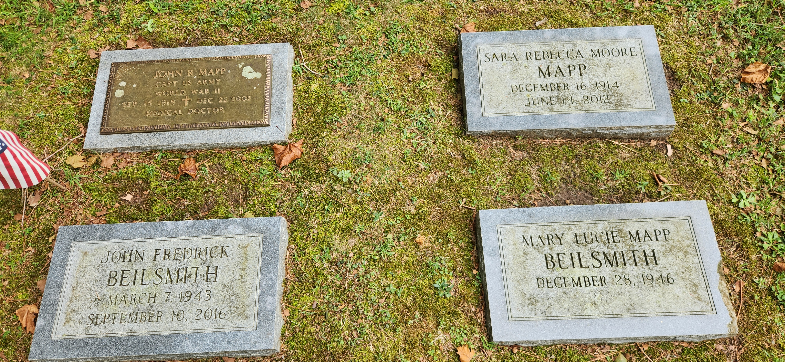

John R. MappCAPT US ARMYWORLD WAR IISep 16 1915 - Dec 22 2002Medical Doctor
Sara Rebecca Moore MappDec 16 1914June 14 2010
John Fredrick BeilsmithMarch 7 1943September 10 2016
Mary Lucie Mapp BeilsmithDecember 28 1946